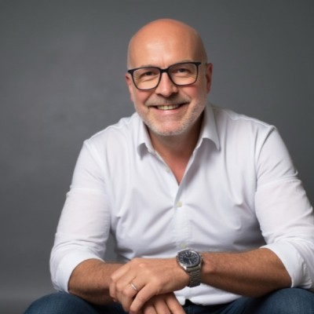

Les esprits derrière Connected Mate
Deux passionnés d'innovation, de technologie et de partage de connaissances. Ensemble, ils construisent l'écosystème Connected Mate.
L'équipe
Fondateurs

Alexandre Cormeraie
Fondateur de Connected Mate
Responsable IA & Innovation chez TGV Europe (SNCF Voyageurs). Conférencier IA et transformation digitale, intervenant à INSEAD et faculty speaker au CEDEP depuis 2023. Co-fondateur de Connected Mate avec PPC : keynotes, podcast et applications privacy-first développées en vibe coding.

PPC
Co-fondateur de Connected Mate
Chief Digital Evangelist au Groupe BPCE depuis 2017. Auteur du livre « Réinventez votre entreprise à l'ère de l'IA » (2025, préface Serge Papin) et de la newsletter Up to date suivie par plus de 10 000 professionnels. Conférencier IA, MC et co-fondateur de Connected Mate.
La société
Connected Mate SAS
Innovation, Conférences, Podcasts, Applications
Connected Mate est une SAS indépendante basée à Paris. Nous concevons des applications natives Apple privacy-first, organisons des keynotes et produisons un podcast sur l'innovation, l'IA embarquée et l'entrepreneuriat tech.
Connecter les idées, respecter les personnes
Construire des outils logiciels qui augmentent les humains sans collecter leurs données. La privacy n'est pas une option, c'est l'architecture.
L'IA au service du local et du privé
Apple Silicon, Apple Intelligence, Whisper on-device : la nouvelle génération d'IA tourne sur l'appareil. Nous misons 100% dessus.
Quatre axes complémentaires
- Applications NoteTaker AI, Pock, Better Dictate
- Keynotes Conférences sur l'IA, la privacy, l'entrepreneuriat
- Podcast Connected Mate — Spotify, Apple, Deezer, YouTube
- Conseil Accompagnement stratégique d'organisations
Quatre principes qui guident chaque décision
- Privacy first Aucune donnée envoyée à un serveur tiers
- On-device Tout le calcul tourne sur l'appareil de l'utilisateur
- Bootstrapped Indépendance financière et éditoriale
- Made in France SAS basée à Paris
Contact
Envie de collaborer ?
Une question, une invitation pour une conférence ou un partenariat ? Contactez-nous directement via WhatsApp ou par email.